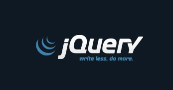
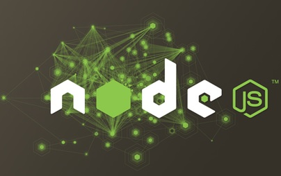
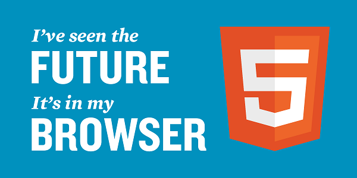

一个小分享，知识有限，抛砖引玉。
Ajax
03年的时候我上六年级，那时候网吧刚在小县城的角落萌生。传奇，大话西游第一代网游一时风靡。我抱着试一试的心态给了网吧老板两块钱想申请个号玩玩，然后接下来的一个小时我一直在，注，册，账，号。
彼时网吧用的512k的带宽，注册的时候，填了一堆信息，提交，页面跳转，嘣，”您填写的信息有误，请重填”。然后跳转回注册页面，以此循环。我现在时常想，如果当时ajax能普及开来，我就可以省2块钱了。
那么ajax是什么?
首先ajax是一种技术。以往的网页交互方式，用户在点击一个按钮后，比如提交按钮，用户就要等待漫长的数据和服务器的交互，期间用户无法进行任何操作，只能点根烟。而ajax所做的，就是在向服务器发送请求的时候，我们不必等待结果，而是可以同时做其他的事情，等到有了结果我们可以再来处理这个事。
其实ajax技术早在1998年的时候就已经由微软实现了，然而直到2005年2月，Adaptive Path公司的Jesse James Garrett发表文章"Ajax: A New Approach to Web Applications"，人们读了后觉得哎哟不错哦这个屌，这之后ajax才大规模普及开来。
ajax的出现，极大了提高了web的用户体验。时至今日，即使国内IT发展再怎么落后，所有网站的登录注册也已经实现了ajax交互。用户点填写完信息后，页面不用刷新就可以知道信息提交成功与否，哪错改哪。
另外ajax作为一种前后端分离的解决方案，也已经被国内大多数不很low的公司所采用，也间接导致了php等网页脚本语言的衰落。
jQuery
早年的js编程，代码的效率是极其低下的，这点尤其体现在操作dom上，开发者想要给一个按钮添加事件，要写长长一大段重复的代码去获取到这个按钮，再写长长一大段重复的代码去添加事件。尽管老油条会将常用的操作封装起来，但是对于不会封装的新手，这无疑是很痛苦的一件事，尤其再加上各种各样的兼容。

2006年，本着拯救菜鸟，让他们do more的宗旨，jquery诞生。jQuery诞生的意义，一是对ie6 7 8 及各种割据一方的浏览器做好了兼容，二是极大简化了dom操作，使开发效率大大提升。jquery很火爆，火爆的有些前端只会写jquery而不会写原生js的程度。时至今日，说jquery write once，see everywhere已经不为过了。
jquery的另一个意义（我认为）在于，它催化了人们对前端的兴趣与探索，相比linux，你用很低的成本，就可以写出一个让不懂编程的妹子说欧巴你碉堡了的效果，让人们觉得哎哟（又）不错哦这个屌。此后大量的类库和基于jquey的插件雨后春笋般诞生，前端行业歌舞升平欣欣向荣，网页开发进入一个新时代。
Chrome
天下武功出谷歌。在ie6,7,8的时代里面，尽管Firefox也缓慢的挑战ie的地位。但和2009年开始Google开始推广的chrome浏览器产生的颠覆性影响比起来，逊色很多。Chrome使用Apple的开源内核webkit，良好的设计标准和市场反应；促进浏览器快速迭代，让IE在windows10中彻底消失。
chrome浏览器的推出，将简化前端的入门程度又推进了一步，其自带的调试工具好用又无脑，我们可以利用其轻松的查看网络状态，加载顺序，进行断点调试等，同时谷歌的插件功能，又给开发者提供了极大便利。
目前chrome最新版开始采用blink内核，测试版本中，已经可以对css3动画进行追踪和调试。在我还没有想象到的时候，chrome已经实现了它。
一句话，没有chrome，就没有新中国，就只能用firefox了。
GitHub
随着软件项目的迭代加快，项目版本工具也不断的演进，经历CVS, SVN,GIT。到目前为止CVS差不多已经从互联网行业慢慢消失，SVN作为文件和文档存储存在，由linux内核发明人Linus创建的版本工具GIT现在作为代码版本标准。Github依赖于git成为开发人员团队协作的社区！到2015年1月github上已注册的开发人员超过一千万，开源项目几千万。其中2014中国研发者在github上增长最快。你几乎可以在上面找到一切你想要的代码…比如username..password..
OAUTH
OAuth1或OAuth2与以往的授权方式不同之处是OAUTH的授权不会使第三方触及到用户的帐号信息（如用户名与密码）。
产生背景：最常见的服务场景，用户需要使用两个不同企业的服务，登录验证A企业，下载内容；然后登录验证B企业，上传内容到B企业服务，复杂又耗时。无论是用户，还是A、B都会想要互通服务。这就产生了核实身份的需求。旧的用户名、密码机制会造成A/B企业有权限查看甚至修改对方的用户资源。为了达到确认身份、服务互通，Google、Yahoo、Microsoft牵头促使OAuth1.0产生。之后的OAuth2.0是各大互联网企业基于https安全的一次新规划。
目前最常见的应用场景主要在授权登录上，如微信、qq、微博等等。
JSON
Json虽然是2001年就产生的标准，但被广泛应用是在2008年之后各种Ajax应用、iPhone、Android设备流行之后。旧的服务体系多是企业级，所以XML对java型的企业级服务定位有益。但对于流量限制，语义简单的API服务来说，XML庞大、冗余、不易学又占带宽。
去年我刚工作的时候，后台给我返回一个数组，没有发言权的我在是要遍历这个数组还是转化为json格式之间纠结了很久。
Json的普及，从另一个角度体现了web开发的一个优势，不管你后台是java ruby php还是python，你只要给我一个json格式的接口，我就能撑起整个地球。
DJANGO&RAILS
敏捷开发打破了项目研发模式。在2010之后的WEB2.0时代，Html5盛行，前端工作被分离出去，PHP那种网页脚本的优势没那么明显，虽然在CMS和论坛模板上依然有优势。Django和Rails的最大优势在于，他让个人或两三个的小团队，实现整套产品成为可能。以Instagram为例，最初两个python工程师用django快速实现了服务端的所有功能，在用户增长时，再将大访问量和大数据量的服务独立出去。
尽管现实残酷，rails每况日下，IE8和rails谁先消失只是先后问题，但其提供的解决方案还是被很多后生所效仿。人们都会记得这朵昙花。
Bootstrap
2011年Twitter开源的网页端GUI框架。jquery兼容了不同浏览器的js部分，bootstrap则兼容了不同浏览器的css部分。甚至于说，作为一个后端开发，你无需了解css，无需前端，无需设计师，只要看一看bootstrap的文档，就可以搭起一个美观大方的后台管理系统。常见类似的GUI框架还有zurb的foundation,google的materialize，百度也曾出过一个名为GMU的移动端框架。
就我个人来说，我并不喜欢这些gui框架，尽管他们简化了css，实现了一些很炫酷的效果，尽管我在项目中也用到过这些，尽管我不想承认我是绿茶。这些框架最大的缺点就是，千篇一律，所有的页面都是一个样子，一样的nav，一样的sidebar，一样的表单，连鼠标点上去放个光都一模一样。就像我如果长了三条腿（虽然确实长了三条腿）别人会说我很别致让他们眼前一亮，但如果所有人都长了三条腿，web也就失去其魅力了。另一个缺点是臃肿，一个css就走100多k的流量，其js插件又大都依赖jquery，忍心么。
当然，其为了解决响应式提出的栅格化html的思想还是很值得借鉴的。
IOS & ANDROID系统的普及
2009年之后IOS和Android的快速发展，导致WEB开发发生以下改变：
1. html5在移动浏览器上优先实现，Android和IOS设备全面支持html5、CSS3，加速了IE消失。
2. 上网随时随地发生。鼠标点击、内容繁复的网页越来越简洁，响应式设计快速流行。
3. APP和服务器交互大部分和网页一样基于HTTP协议，webapp，hybrid app的概念被提出。
关于webapp，这里简单说下web相比原生的优势。
- 跨平台：常说的一次编译，到处运行
- 免安装：打开浏览器，就能使用
- 快速部署：升级只需在服务器更新代码，而不像客户端需要更新版本
- 超链接：可以与其他网站互连，可以被搜索引擎检索
听起来刁刁的，这些优势却经不住推敲。首先，不同系统的用户使用习惯是不同的，ios用户返回按钮习惯在左上角，而安卓用户却习惯在屏幕最下方的位置，产品经理问，那放在哪儿。呵呵哒不知道。其次，曾经看过一个调查报告，问用户更喜欢用客户端还是web端。
喜欢客户端的用户远远超过了web端。你问我喜欢什么，我也是喜欢客户端。你问我为什么，我觉得比较有安全感吧，而且更新版本让我觉得很爽，很有存在感，让我知道我并没有被世界遗忘，让我知道你们产品在更新，在为我操心。另外超链接..我一个客户端要你seo干什么。这还没完，webapp的缺点还有一大把，最大的缺点莫过于没有GPU加速，想要实现一个复杂一些动画，真是要了浏览器亲命了。其次网页是单线程的，加载dom时会阻塞js，导致的结果就是，卡。一卡就烦了，烦了就关了，用户减一。
而hybrid就不同了，hybrid app的意思是混合原生应用，将需要频繁更新的页面作为web放在远程更新。这是一个靠谱的解决方案，BAT有很多案例，如微信发布的JS SDK，掌上百度和淘宝客户端Android版。
当然这里边的坑有很多，有机会，我把我踩过的坑讲给你们听。
NodeJS
我纠结了一会node属不属于前端范畴的问题。我认为是属于的。
解决高并发一直是后台哥哥们乐于讨论的问题，比如咱们的好近实时监控系统，理论上每个连接都会生成一个新线程，每个新线程可能需要 2 MB 配套内存。在一个拥有 8 GB RAM 的系统上，理论上最大的并发连接数量是 4,000 个用户。随着用户的增长，咱们希望监控程序支持更多用户，这样，就必须添加更多服务器。当然，这会增加业务成本，尤其是服务器成本。除了成本上升外，还有一个技术问题：用户可能针对每个请求使用不同的服务器，因此，任何共享资源都必须在所有服务器之间共享，到这里，技术就到了瓶颈。node诞生的初衷，就是为了解决这个问题。node解决这个问题的方法是：更改连接到服务器的方式。每个连接发射一个在 Node 引擎的进程中运行的事件，而不是为每个连接生成一个新的 OS 线程，并为其分配一些配套内存。
nodejs属于服务器端语言，在前后端分离这场圈地运动中是前端的一个有利武器，同时在前端自动化上也提供了大量的可编程工具（grunt,bower,gulp等），淘宝百度对nodejs的热度一直很高，自然而然我认为这是一个趋势。去年美团成立了美团酒店的团队，选择了node作为后台语言，圈走了后台大部分的工作。我在想，前端js加上node再加上对UI的技能需求，以后前端工程师是不是该叫全端工程师了。

BIG DATA
大数据大概是过去几年最火热的名词，我一大批同学听说数据挖掘年薪30万都嗷嗷嗷去做数据库了。
大多数时候，我们在谈大数据其实都是在谈在海量数据下的数据挖掘、数据分析、智能推荐、实时分析等。不同公司的技术方案不同，我只列两个国内成功的案例：
• 京东个性化电商，场景包括基于行为、偏好、地域、时间、好友关系等维度，向不同的用户推荐不同的产品，不同用户搜索产品排序也不同…
• 百度地图东莞8小时迁徙图；百度搜索智能提醒
• 360手机卫士，电话号码防骚扰功能是通过用户的地域、身份、骚扰趋势，将标记的2.56亿个电话号码选出1000个和用户关联度最高的，写入用户手机的10k的文本里，达到不联网不做任何网络交互的情况下，为用户防骚扰
HTML5+CSS3
这是这几年被说烂了的一个词，人人都在说HTML5，问HTML5是什么，他们也说不清楚，就是酷，就是炫，就是酷炫。
在我看来，HTML5只是一个三人成虎的东西，它吸引的眼球远超过了它提供的功能，HTML5只是提供了一些新的API，就等于一个app从1.0升级到2.0增加了附近的人功能而已。而且其提供的API，也就是在移动端试一试水，在pc端因为兼容的问题，始终不能被明媒正娶。pc端的开发还是以HTML4.0+CSS2为基准渐进增强。至于css3，它最被人关注的动画，也是flash玩剩下的东西。
移动端的飞速发展催化了HTML5的发展，HTML5的发展也促使各浏览器趋于标准化。
这条标准化路上，微信功不可没，1024，围住神经猫，淘宝十年，LEXUS NX这些融合了大量HTML5+CSS3元素的页面让人印象深刻。
此外，微软抛弃IE代号，开发edge，各大浏览器厂商的不断标准化，HTML5草案定稿，ES6草稿的不断实现与完善，前端之路看起来是一条京畿坦途，我充满期待。

未来
3D页游？WebOS？ 虚拟现实？
最后，随着用户硬件性能的提升，网络带宽的越来越粗，传感系统，Retina，WebGL技术的日渐成熟，再加上O2O的蓬勃发展，上边这些会成为现实么？
来源：http://www.cnblogs.com/sussski/p/4634595.html